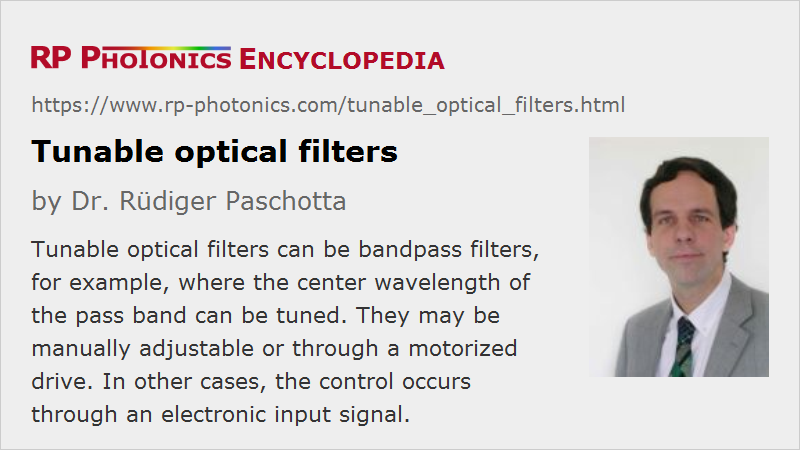

Tunable Optical Filters
Definition: optical filters with tunable filter parameters, e.g. concerning center wavelength of pass band
More specific terms: acousto-optic tunable filters
German: abstimmbare optische Filter
How to cite the article; suggest additional literature
Author: Dr. Rüdiger Paschotta
For some applications, one requires optical filters where certain filter parameters are tunable – either manually or with an electronic control system. A typical case is a bandpass filter, where the center wavelength of the pass band can be varied; in some cases, one can also tune the bandwidth.
There are also tunable filters where the filter transmission can be tuned independently for a wide range of wavelengths.
Some tunable filters can be realized in the form of micro-optics, reaching a very small footprint.
Types of Tunable Filters
The following sections gave various examples for types of tunable filters.
Monochromators
Most monochromators are tunable, i.e., their pass band wavelength can be varied either manually or with a motorized stage.
Compact MEMS-based filters can be based on the same operation principle. For example, one may spatially disperse different wavelength components with a diffraction grating, then reflect the light on a MEMS mirror which can be rotated in some angular range. The mirror can reflect light to a fiber collimator. Only light within a certain wavelength interval, which depends on the mirror orientation, can get to the output fiber. Due to the low weight of a MEMS mirror, the tuning can be very fast. Besides, such an optical system can be made very compact.
Lyot Filters
A Lyot filter can be tuned simply by rotation of the whole device. Such rotations can also be accomplished with a motor drive.
Rotatable Thin-film Devices
Thin-film devices (dielectric mirrors) have transmission characteristics which depend on the angle of incidence. Therefore, the filter characteristics can be tuned by rotating them.
Tunable Fiber Bragg Gratings
A fiber Bragg grating can be made such that it reflects light only in a narrow range of wavelengths. The center wavelength of the reflecting region and to some extent be tuned e.g. by stretching the fiber with a piezo transducer or by changing its temperature.
Tunable Resonators
An optical resonator, ideally operated with a mode-matched input, transmits light only for certain resonance frequencies. Those can be tuned e.g. by modifying the resonator length with a piezo transducer.
Such filters can also be realized as fiber Fabry–Perot resonators.
Acousto-optic Filters
A kind of acousto-optic modulators can be used as acousto-optic tunable filters. Here, diffraction into the first-order beam occurs only for a narrow range of wavelengths, which can be tuned through the drive frequency.
Liquid Crystal Modulators
It is possible to realize tunable filters based on liquid crystal modulators. For example, one can spatially disperse different wavelengths components with a pair of diffraction gratings, send them through a liquid crystal modulator (acting as a spatial light modulator), which can independently attenuate different wavelengths components, and recombine them either on the same grating pair or a second pair of gratings.
Applications of Tunable Filters
Tunable bandpass filters can be used in various fields; some examples:
- One can realize a broadband tunable light source by combining some kind of white light source (for example, a supercontinuum source) with a monochromator. Compared with a tunable laser, one can cover a significantly wider wavelength region. However, there is a trade-off concerning the transmission bandwidth: the smaller the wanted bandwidth, the lower the power throughput.
- One can build a scanning spectrometer, where the reflected power is monitored while the wavelength range is scanned.
- Compact tunable bandpass filters are suitable for use in optical fiber communications, particularly in the context of wavelength division multiplexing: one may, for example, realize add–drop multiplexers which can inject or eject specific wavelength channels.
- There are also applications in the area of fiber-optic sensors.
- Another possibility is to make wavelength-swept lasers, as required e.g. for optical coherence tomography.
Suppliers
The RP Photonics Buyer's Guide contains 21 suppliers for tunable optical filters. Among them:
Questions and Comments from Users
Here you can submit questions and comments. As far as they get accepted by the author, they will appear above this paragraph together with the author’s answer. The author will decide on acceptance based on certain criteria. Essentially, the issue must be of sufficiently broad interest.
Please do not enter personal data here; we would otherwise delete it soon. (See also our privacy declaration.) If you wish to receive personal feedback or consultancy from the author, please contact him e.g. via e-mail.
By submitting the information, you give your consent to the potential publication of your inputs on our website according to our rules. (If you later retract your consent, we will delete those inputs.) As your inputs are first reviewed by the author, they may be published with some delay.
See also: optical filters, monochromators, acousto-optic tunable filters, wavelength division multiplexing
and other articles in the category photonic devices
|  |
If you like this page, please share the link with your friends and colleagues, e.g. via social media:
These sharing buttons are implemented in a privacy-friendly way!